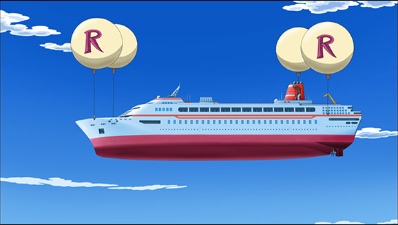

Lors de leurs luxueuse croisière du Nouvel An, allant de Johto à Galar, les passagers ont été bloqués une semaine en pleine mer en raison d'une "excroissance marine" accrochée à la coque, qui aurait pu nuire à l'écosystème marin.
Selon le gouvernement de Poké City, des plongeurs ont dû enlever la "biofoul" - une accumulation de micro-organismes,
de plantes, d'algues ou de petits animaux - de la coque du Viking Orion, un navire de 930 places,
pendant qu'il était ancré dans les eaux internationales.
Le nettoyage était nécessaire pour protéger les eaux de Poké City des "organismes marins potentiellement dangereux",
a expliqué le ministère de la Pêche dans un communiqué transmis à l'AFP.
Poké City craint en effet l'introduction d'espèces invasives, que ce soit dans ses eaux ou sur son sol.
Les passagers d'une luxueuse croisière bloqué
